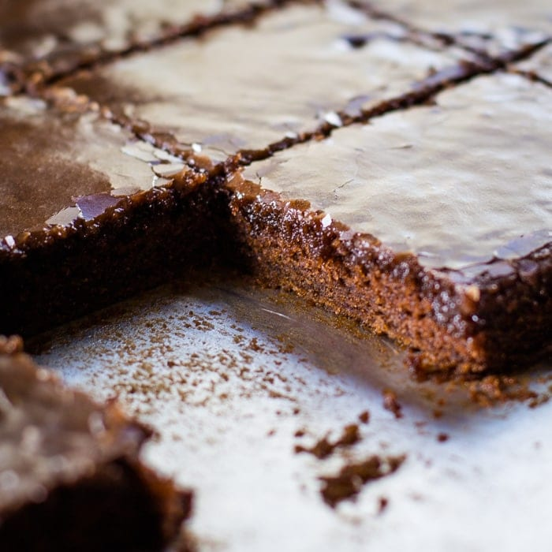

Texas Brownies

Description
These brownies are soft and cake-like with a thin chocolate glaze.
They go great with a glass of milk!
Ingredients for the Batter
- 2 cups A.P. Flour
- 2 cups Sugar
- 1/2 cup Butter
- 1/2 cup Shortening
- 1 cup Coffee or Water
- 1/4 cup Dark, Unsweetened Cocoa
- 1/2 cup Buttermilk
- 2 Eggs
- 1 tsp. Baking Soda
- 1 tsp. Vanilla Extract
For the Frosting
- 1/2 cup Butter
- 2 tbsp. Dark Cocoa
- 1/4 cup Milk
- 3 1/2 cups Unsifted Powdered Sugar
- 1 tsp. Vanilla
Instructions
- Preheat oven to 400°.
- Grease a ½ sheet pan/jelly roll pan (17 ½” x 11”)
- In a large mixing bowl, combine flour and sugar.
- In a saucepan, combine coffee, butter, shortening, and cocoa. Stir and bring to a boil.
- Pour the butter/coffee mixture over the flour and sugar in the mixing bowl.
- Add buttermilk, eggs, baking soda, and vanilla. Mix well by hand or electric mixer on high.
- Pour batter into the prepared ½ sheet pan, and bake at 400° for 20 minutes, or until the middle tests as done.
- While the brownies bake; prepare the frosting.
In a saucepan, heat the butter, cocoa, and milk until boiling.
- Mix in the powdered sugar and vanilla until smooth.
- Pour warm frosting over brownies as soon as they come out of the oven.
- Cool and cut into 48 bars.